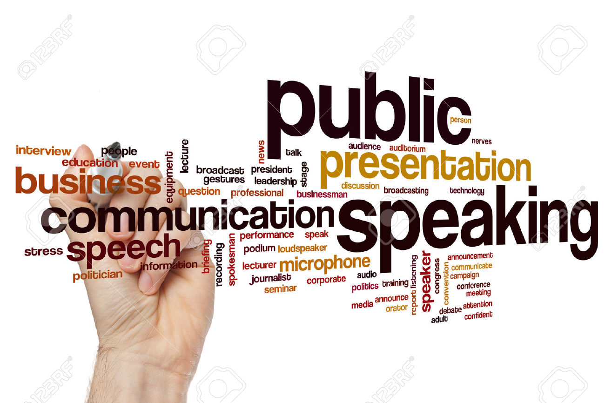

Anthony Garcia (Me)
My Strengths
One of my strengths is being resourceful and putting the tools around me into good use.
This is one of my strengths because when I am stuck on a problem or I am trying to solve a problem I observe the tools that surround me and try
to come up with a plan or idea that can help me solve a problem with those specific tools. Another strength I attain is being self-aware because as I mentioned before I
observe my surroundings to come up with a plan and try to solve a specific problem.
My Weaknesses

One of my weaknesses is public speaking. This one of my weaknesses because when trying to
talk in front of a crowd I get anxious and nervous that I will mess up and everyone will start laughing at me. Another weakness I attain is coding.
Coding is one of my weaknesses because I have no knowledge about it, but I believe that with practice I will improve and get better. Another of my weaknesses is me
being slow. This is one of my weaknesses because it prevents me from finishing what I have to finish in order to succeed.
David Cervantes
David's Strengths
 One of David's strengths is him being able to type at a really fast pace. Another of his strengths
is him being able to work at the very last minute, in other words being able to work under pressure. The last strength David attains is him being able
to work on something he enjoys for a very long time, however he will only stop until he has finioshed that specific thing/topic.
One of David's strengths is him being able to type at a really fast pace. Another of his strengths
is him being able to work at the very last minute, in other words being able to work under pressure. The last strength David attains is him being able
to work on something he enjoys for a very long time, however he will only stop until he has finioshed that specific thing/topic.
David's Weaknesses
One of David's weaknesses is his laziness. Another of his weaknesses is wanting and having the capacity
to finish something right before it is due. Another of David's weaknesses is him spending way too much time on his computer. The last weakness David attains
is not being able to work with people that are not willing to do any work. Those were some strengths and weaknesses David Cervantes attains.
Kevin Zelada
Kevin's Strengths
One of Kevin's strengths is being able to speak out loud without getting anxious or nervous. Another
strength Kevin is proud to have is having the mentality to stay focus on a specific target or objective, just like David Cervantes. The last strength Kevin
attains is him being open-minded towards the ideas and opinions of other people, even though it does not benefit him in any way shape or
form.
Kevin's Weaknesses
One of Kevin's weaknesses is doubting his answers and not having the confidence to trust his gut. Another
weakness Kevin attains is not being able to build his confidence to disagree with another person's opinions or ideas. The last weakness Kevin attains is not having the willingness and capacity
to step up and lead a group of people to victory. Those were three strengths and weaknesses that Kevin
posses.
Anthony/Tony Aguilar
Tony's Strengths
One of Tony's strengths is that he is empathetic towards other people. Another of his strengths is that he is caring
for both animals and people. Another strngth Tony has is that he is very organized with his stuff and with the stuff of other people. Another strength of Tony is that he is determined to finish
the stuff he starts. The last strength Tony attains is that he is open-minded towards other people and their ideas or opinions.
Tony's Weaknesses
One of Tony's weaknesses is that he gets anxious when he is put under pressure. Another weakness Tony has is that he
is self-conscious, in other words embarrassed, uncomfortable, or uneasy. The last weakness Tony attains is that his mentality is not as strong as other people is.
These were some of Tony's strengths and weaknesses.
Lester/Jester Gamez
Lester's Strengths
One of Lester's strengths is that he is great at listening to ther people speak. Another strength of his is that he respects
and understands where people come from, in other words their background, and as well as their opinions. Another strength Lester attains is him being tolerable and having
the willingness to explore and try out new things, such as hobbies. The last strength Lester has is having the capacity to meet other people, even though he does not like him/her.
Lester's Weaknesses
One of Lester's weaknesses is him being passive once in a while. Another weakness of his is having inconsistent habits, such
as wanting to eat healthy and working out daily. The last weakness Lester attains is him being lazy sometimes. These are some of Lester's strengths and weaknesses he
attains.